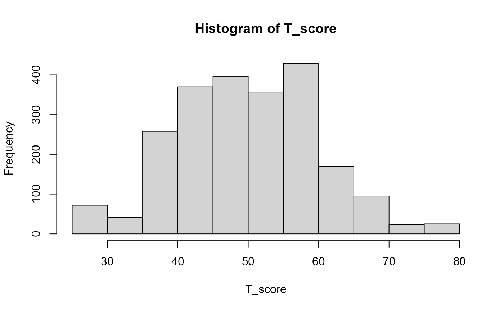

Create norms for psychological or educational tests
make.norms.RdCreates percentiles, McCall T-scores (M = 50, SD = 10) and stanines (M = 5, SD = 2)
Examples
# Create norms for the Neuroticism Scale of the bfi
library(psych)
data(bfi)
bfi <- na.omit(bfi)
Ntotal <- rowSums(bfi[16:20])
make.norms(Ntotal)

#> Raw_Score Percentile T_Score Stanine
#> 5 1.6 29 1
#> 6 4.1 33 2
#> 7 6.9 35 2
#> 8 10.4 37 2
#> 9 14.3 39 3
#> 10 19.3 41 3
#> 11 24.6 43 4
#> 12 30.1 45 4
#> 13 35.9 46 4
#> 14 41.9 48 5
#> 15 48.0 50 5
#> 16 53.7 51 5
#> 17 58.8 52 5
#> 18 64.0 54 6
#> 19 69.3 55 6
#> 20 74.5 57 6
#> 21 79.7 58 7
#> 22 84.1 60 7
#> 23 87.6 62 7
#> 24 90.5 63 8
#> 25 92.7 65 8
#> 26 94.6 66 8
#> 27 96.3 68 9
#> 28 97.5 70 9
#> 29 98.4 71 9
#> 30 99.4 75 9